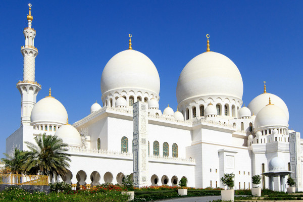
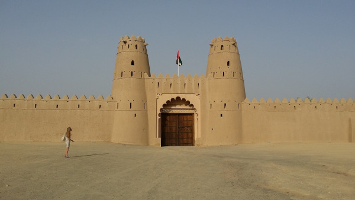
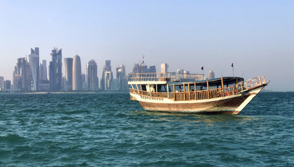
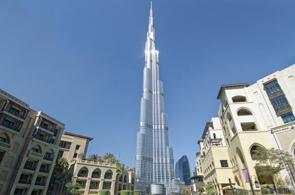

Emirados Árabes Unidos: O Luxo e a Tradição do Oriente Médio
Localizados no Golfo Pérsico, os Emirados Árabes Unidos são uma federação de sete emirados: Abu Dhabi, Dubai, Sharjah, Ras Al Khaimah, Umm Al Qwain, Ajman e Fujairah. Os emirados mais conhecidos são o Dubai e Abu Dhabi, que funciona como capital do país.
Os Emirados Árabes Unidos são um país exótico, considerado um dos países islâmicos mais liberais, tal como um dos mais estáveis no que toca ao seu bem-estar económico, embora cheio de contradições. Em termos demográficos, a população dos Emirados Árabes Unidos é de 9,2 milhões, mas apenas 1,4 milhões são cidadãos. O resto da população é composta por emigrantes.
Documentação necessária
Brasileiros não precisam de visto para entrar nos Emirados Árabes Unidos e, consequentemente, em Dubai. O visto de visitante é concedido na entrada do país e é válido por seis meses para até noventa dias de permanência com múltiplas entradas.
Para quem pretende dirigir em Dubai, será necessário ter a PID (Permissão Internacional para Dirigir). A Carteira Nacional de Habilitação não tem validade nos Emirados Árabes. De todo modo, é sempre aconselhável ter a PID para viagens internacionais.
Idioma
A língua oficial em Dubai é o árabe, porém o inglês é falado amplamente na cidade. A maioria da população é de estrangeiros, por isso é comum que todas as placas de sinalização, panfletos informativos, cardápios etc. estejam escritos nas duas línguas.
Moeda
A moeda oficial de Dubai é o Dirhan (AED). A cotação, em relação ao dólar, é de USD 1 para AED 3,675. Será quase impossível encontrar a moeda dos Emirados Árabes Unidos no Brasil, por isso será necessário levar outras formas de pagamento, como dólar, euro e cartões de crédito. Casas de câmbio estão disponíveis no aeroporto, assim como caixas eletrônicos para saque da moeda em espécie. Verifique com a casa de câmbio se ela aceita a troca do dinheiro de volta pela mesma cotação. Tal serviço é comum nas casas de câmbio do aeroporto.
Cartões de crédito e débito são amplamente aceitos e caixas eletrônicos estão espalhados por toda a cidade. Lembre-se sempre de desbloquear o cartão para uso no exterior e nunca leve apenas uma opção de pagamento.
Melhor época do ano para viajar
As melhores épocas para visitar os Emirados Árabes Unidos são outubro e novembro e ainda fevereiro e março. Os meses de dezembro e janeiro, que também costumavam estar nesta lista de meses recomendados, foram “desclassificados” por causa da imprevisibilidade dos últimos anos, e pelo facto de recorrentemente serem palco de dias nublados, chuvosos e sombrios.
Uma viagem para os Emirados Árabes Unidos no auge do verão (julho e agosto) é uma péssima ideia – só se for pelos valentes descontos que fazem os hotéis, mas o mais provável é que não consiga prescindir de muitas horas passadas no hotel sob o efeito do ar condicionado.
Atrações turística
1. Grande Mesquita Sheikh Zayed

Fonte: Pexels
Destaque de Abu Dhabi, a Grande Mesquita Sheikh Zayed impressiona pelo seu tamanho e beleza. Seus números são de impressionar: minaretes de mais de 100 metros de altura, 82 cúpulas de mármore, o maior tapete persa do mundo, 17 mil metros quadrados de piso de mármore, 96 colunas internas forradas em madrepérola e o lustre principal, de 15 metros de altura, cravejado de cristais Swarovski.
2. Al Ain

Fonte: Pixabay
Viajar para Al Ain é conhecer um lado diferente dos Emirados Árabes. A quarta cidade mais populosa do país tem a maior proporção de árabes locais, e diferentemente das cidades de Dubai, Abu Dhabi e Sharjah, ela não está na costa, mas a mais de 100 km no interior, já na fronteira com Omã.
Conhecida por "Cidade Jardim do Golfo", por possuir muitas áreas verdes e ter o clima mais agradável, não é tão úmida quanto o litoral. Inclusive foi o refúgio de verão dos antigos líderes do país.
Um dos destaques da cidade é conhecer o Museu Nacional de Al Ain, com uma coleção de artefatos, imagens e vídeos que explicam as variadas épocas de ocupação humana na região
3. Passeio de Dhow

Vale a pena contemplar Dubai à noite do ponto de vista da água. Um cruzeiro rápido com um Dhow, barco tradicional árabe, que sai da marina da cidade leva os turistas a admirar os imponentes arranha-céus e vários hotéis de luxo da cidade. Isso sempre acompanhado da tradicional gastronomia árabe.
4. Burj Khalifa

O Burj Khalifa marca o centro de uma região que pode ser percorrida a pé nos dias menos quentes. Em uma volta pela lagoa artificial de Downtown Dubai, será possível visitar o Dubai Mall, considerado o maior shopping do mundo e onde há um grande aquário; o maravilhoso edifício da Ópera de Dubai; ver o contraste do tradicional Palace Hotel com o Burj Khalifa; visitar o Souk Al Bahar; e, para fechar bem o dia, assistir ao espetáculo das Fontes de Dubai.